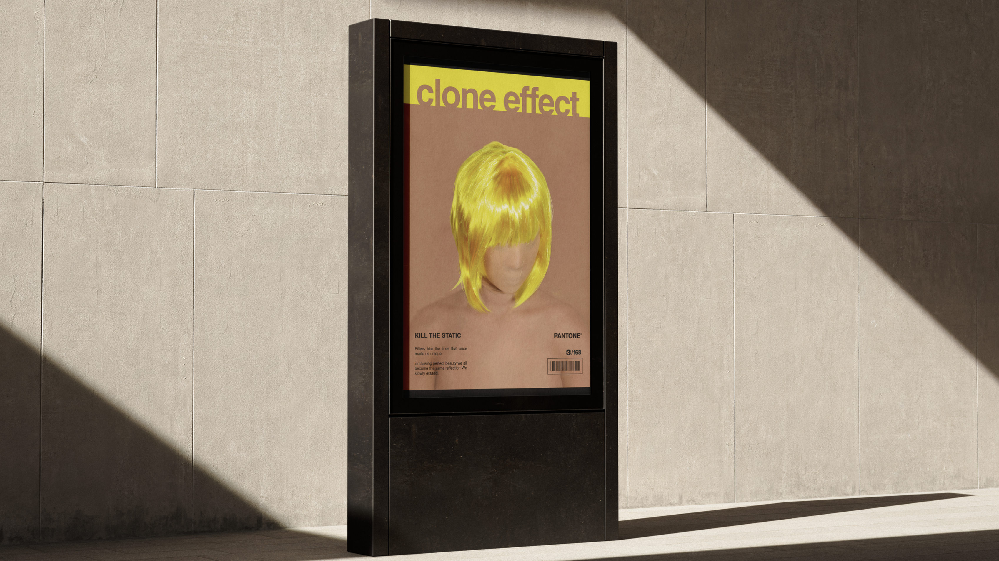
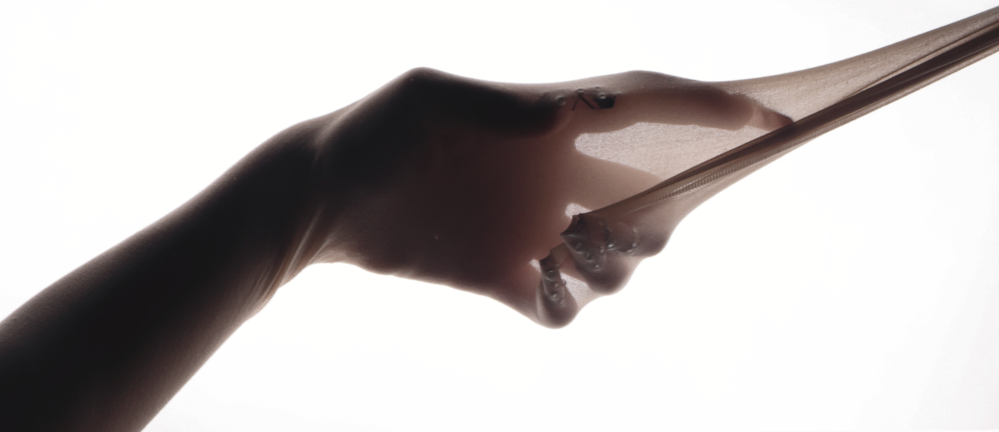
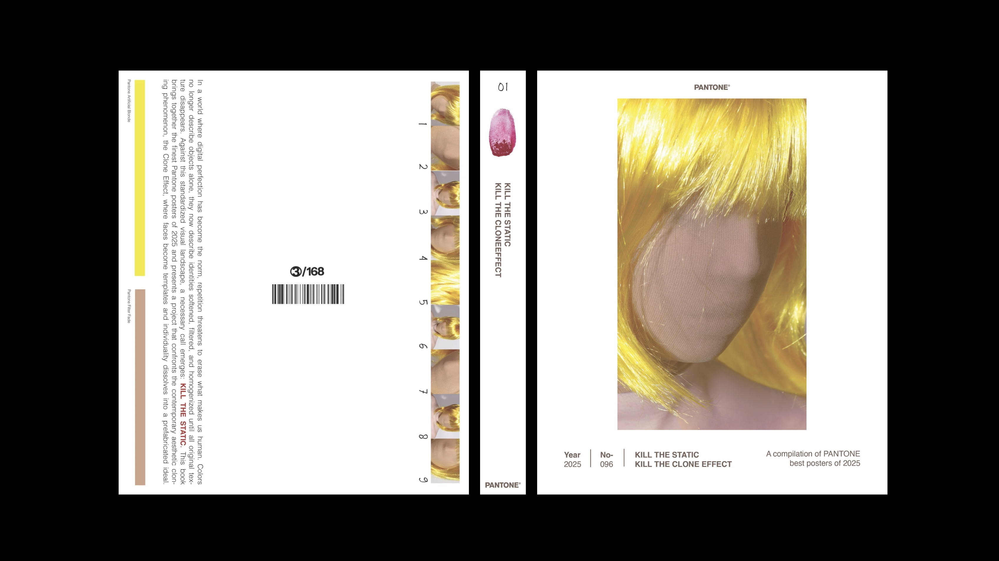
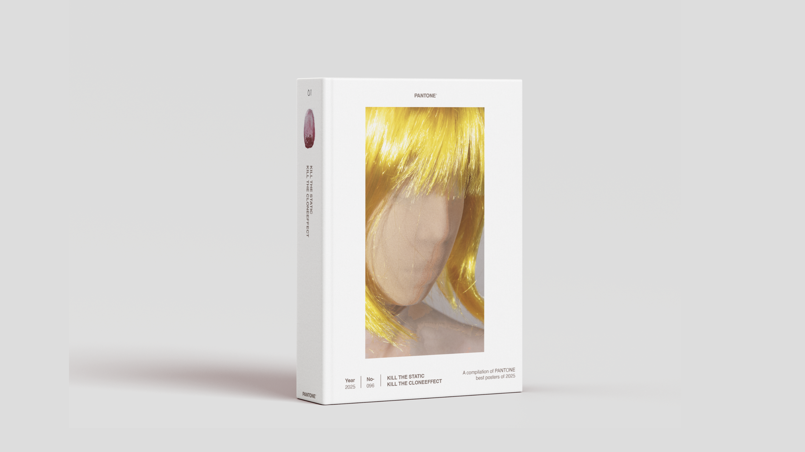
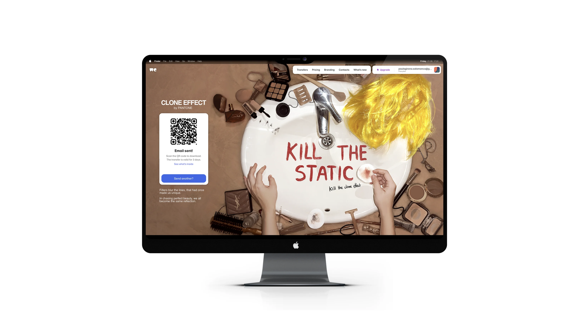
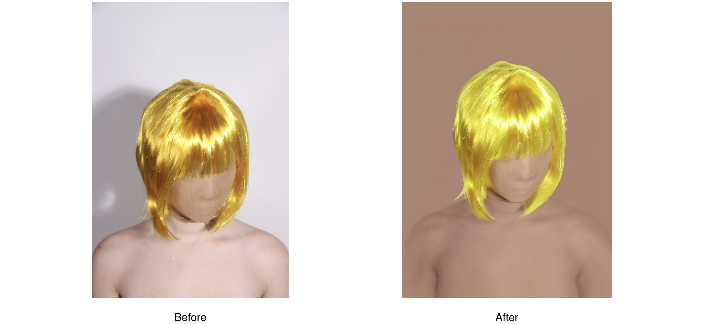
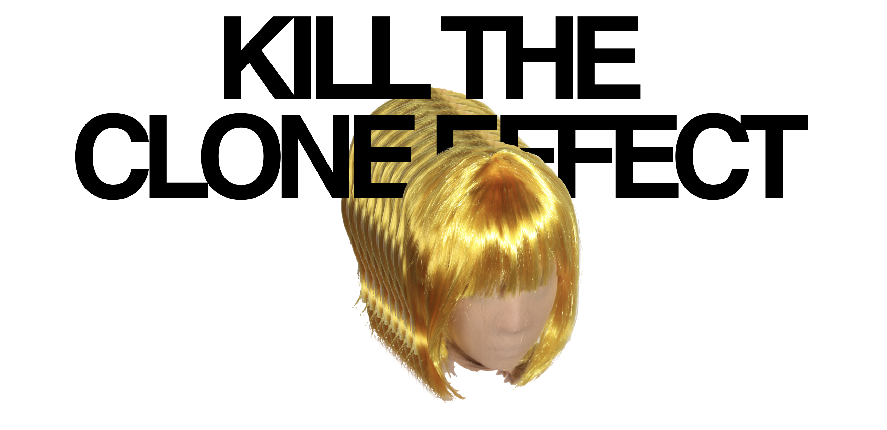

Kill the static
2026
Brand Identity & Art Direction
Brand Identity / Graphic Design / Visual Direction
Visual identity, campaign imagery, and graphic system.
Role: Art Director & Designer.
OVERVIEW
Kill the Static is a visual campaign created for a Pantone design brief, exploring the pressure of modern beauty standards and the gradual disappearance of individuality.
Our challenge was to communicate the slogan "Kill the Static" through a poster, a book design and a WeTransfer visual, creating a cohesive campaign with a strong conceptual message.
THE IDEA
We explored the "clone effect": the idea that, in the pursuit of perfection, women are increasingly encouraged to look alike. Beauty filters, trends and unrealistic standards slowly erase the features that make us unique.
We wanted to question this idea of perfection. What happens when everyone is trying to become the same version of beautiful?
BRINGING THE CONCEPT TO LIFE
We covered our model's face with a translucent mesh, removing her individual features and transforming her into an almost anonymous figure. The artificial yellow wig exaggerates this manufactured appearance, becoming the most striking element of the composition.
We limited our palette to skin tones and an intense Pantone yellow, creating a contrast between the natural and the artificial. Through photography, retouching and bold typography, we developed a visual language that feels deliberately uncomfortable, repetitive and synthetic.
FINAL RESULT
The final campaign extends across print and digital applications, using the same visual identity to communicate one message: perfection should never come at the cost of individuality.
I especially like how something as simple as covering a face can completely change the meaning of a photograph. By removing the features that make someone recognisable, we made their absence the most important part of the design.






